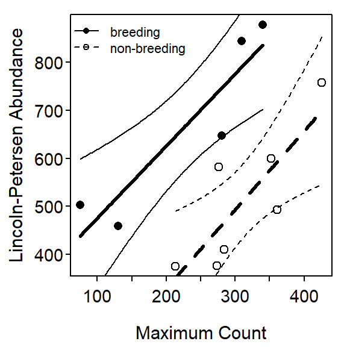
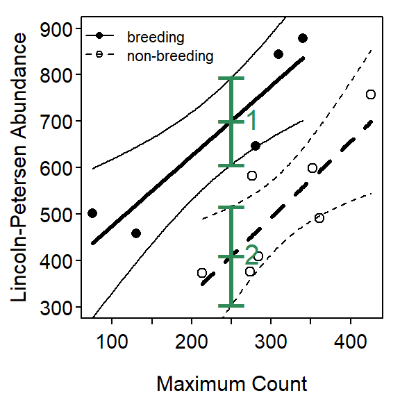

Laysan Teal Monitoring
Monitoring the abundance of animal populations can be expensive. Researchers often attempt to find methods for accurately predicting abundance from simple and inexpensive metrics. In one study, Reynolds et al. (2017) compared the abundance of Laysan Teal (Anas laysanensis) as estimated from the time-intensive Lincoln-Petersen mark-resight method to the maximum annual observed count of Laysan Teal made bi-monthly on Midway Atoll. They wanted to determine if there was a significantly positive relationship between the mark-resight abundance estimate and the maximum annual count, and if that relationship differed between the breeding and non-breeding seasons.
> library(NCStats)
> setwd("C:/aaaWork/Web/GitHub/NCMTH207/modules/IVRegression")> df <- read.csv("LaysanTeal.csv")
> str(df)'data.frame': 12 obs. of 3 variables:
$ max.count : int 75 130 281 309 340 213 274 284 276 361 ...
$ mr.estimate: int 502 459 647 844 879 374 376 409 582 492 ...
$ season : Factor w/ 2 levels "breeding","non-breeding": 1 1 1 1 1 2 2 2 2 2 ...> xlbl <- "Maximum Count"
> ylbl <- "Lincoln-Petersen Abundance"Fitting the Linear Model
> lm1 <- lm(mr.estimate~max.count*season,data=df)> transChooser(lm1)
Lecture Support – ANOVA Demonstration
> lm1 <- lm(mr.estimate~max.count*season,data=df)
> anova(lm1) Df Sum Sq Mean Sq F value Pr(>F)
max.count 1 83421 83421 10.6370 0.011503
season 1 190750 190750 24.3225 0.001147
max.count:season 1 359 359 0.0457 0.835991
Residuals 8 62740 7843 > lm2 <- lm(mr.estimate~max.count+season,data=df)
> anova(lm2) Df Sum Sq Mean Sq F value Pr(>F)
max.count 1 83421 83421 11.899 0.0072813
season 1 190750 190750 27.207 0.0005521
Residuals 9 63099 7011 > lm3 <- lm(mr.estimate~max.count,data=df)
> anova(lm3) Df Sum Sq Mean Sq F value Pr(>F)
max.count 1 83421 83421 3.2862 0.09994
Residuals 10 253849 25385 Model Exploration and Summarization
> fitPlot(lm1,interval="confidence",xlab=xlbl,ylab=ylbl,legend="topleft",cex.leg=0.7)
> summary(lm1)Coefficients:
Estimate Std. Error t value Pr(>|t|)
(Intercept) 324.6130 94.4805 3.436 0.00888
max.count 1.5048 0.3779 3.982 0.00405
seasonnon-breeding -323.9986 187.8052 -1.725 0.12278
max.count:seasonnon-breeding 0.1355 0.6336 0.214 0.83599
Residual standard error: 88.56 on 8 degrees of freedom
Multiple R-squared: 0.814, Adjusted R-squared: 0.7442
F-statistic: 11.67 on 3 and 8 DF, p-value: 0.002718 > confint(lm1) 2.5 % 97.5 %
(Intercept) 106.7406493 542.485322
max.count 0.6333927 2.376185
seasonnon-breeding -757.0781733 109.081017
max.count:seasonnon-breeding -1.3255575 1.596583> ( nd <- data.frame(max.count=c(250,250),season=c("breeding","non-breeding")) ) max.count season
1 250 breeding
2 250 non-breeding> predictionPlot(lm1,nd,interval="confidence",xlab=xlbl,ylab=ylbl,ylim=c(300,900),
legend="topleft",cex.leg=0.7)
obs max.count season fit lwr upr
1 1 250 breeding 700.8101 607.3089 794.3114
2 2 250 non-breeding 410.6898 304.4186 516.9610